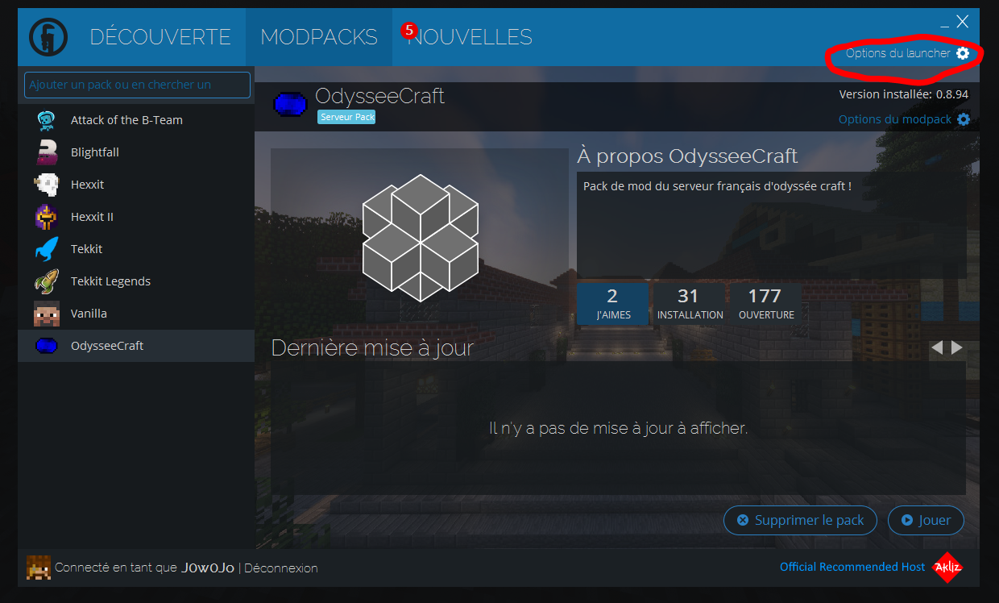
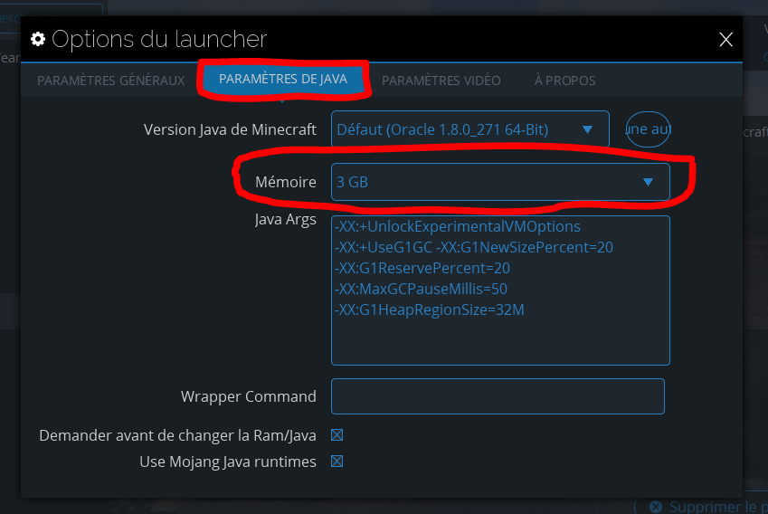

Rejoindre OdysséeCraft
OdysséeCraft utilise Technic launcher,
il fonctionne sur Windows, Mac et même Linux.
Il faut en premier lieu l'installer en cliquant sur le lien: https://www.technicpack.net/download.
Dans la section téléchargement du site technic, descendez un peu, vous trouverez la meme chose qu'à droite.

Une fois technic launcher installé et lancé.
Il vous faudra chercher le modpack du serveur.
C'est simple, prenez ce lien et suivez ce que le gif effectue :
http://api.technicpack.net/modpack/odysseecraft
Maintenant vous pourriez déjà lancer le launcher et potentiellement jouer sur le serveur néanmoins vous aurez surement des lags voire même des crashs, pour cela rajoutons de la ram !
Nous vous conseillons au moins 5GB.

